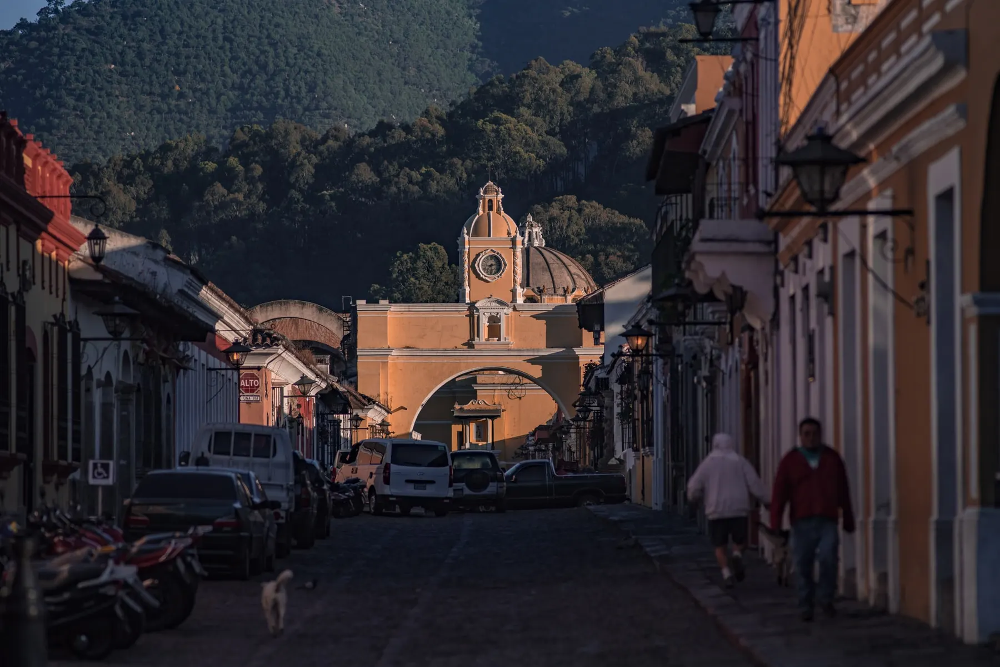
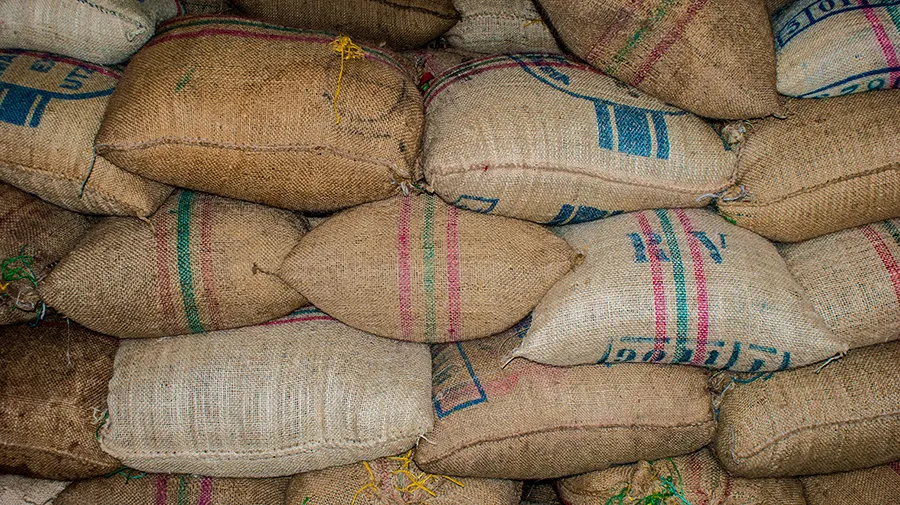
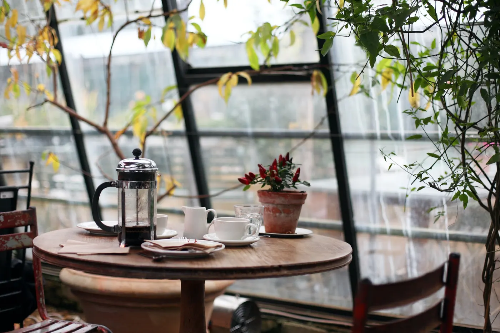
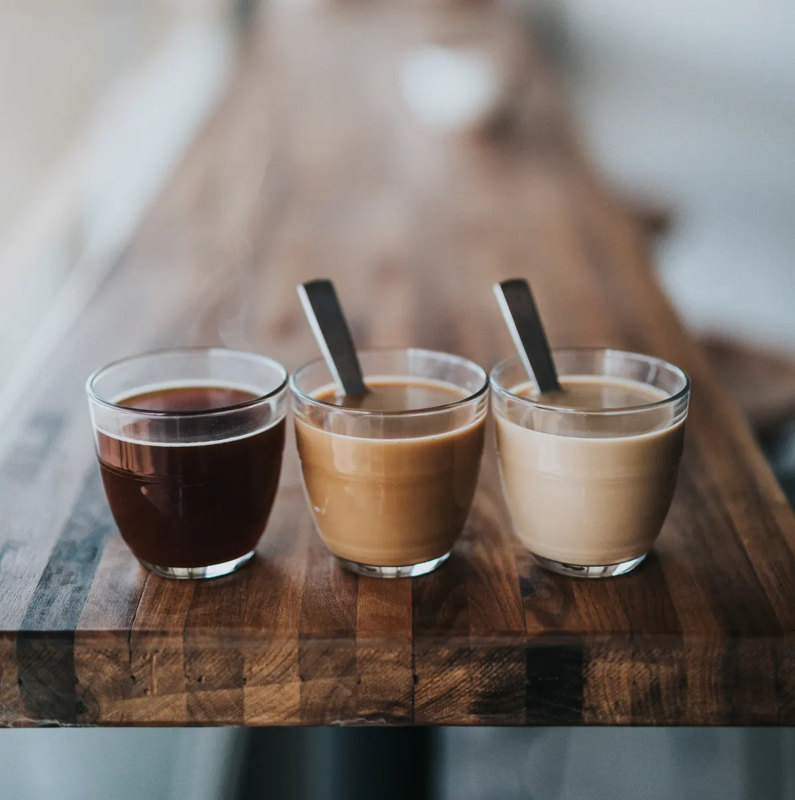

Lavado
Volcán de Agua
Chocolate de leche · Nuez · Final dulce
Q85Pedir

Antigua Guatemala · 1,530 m s. n. m.
Granos 100% arábica cultivados a la sombra del Agua, el Fuego y el Acatenango. Tostamos en pequeños lotes y te lo enviamos fresco a todo el país.
Nuestro origen
El valle de Antigua tiene lo que un buen café necesita: suelo volcánico rico en minerales, noches frescas y días soleados. Trabajamos directo con familias caficultoras de la zona y pagamos un precio justo por cada saco.
El resultado es una taza con cuerpo, acidez brillante y notas a chocolate, cítricos y caramelo.
Nuestros cafés
Cada café lleva el nombre del volcán que lo ve crecer. Disponible en grano o molido, en bolsas de 340 g y 1 lb.

De la finca a tu taza
Solo cortamos las cerezas maduras, una por una, entre noviembre y marzo.
Lavado, honey o natural: cada proceso le da un carácter distinto al grano.
Tostamos cada semana para que el café llegue con todo su aroma.
Empacado con válvula y enviado en 48 horas a cualquier parte de Guatemala.


Visitanos
Vení a probar nuestros cafés recién preparados, con pan dulce de la casa y vista al volcán.
| Lunes a viernes | 7:00 – 19:00 |
|---|---|
| Sábado | 8:00 – 20:00 |
| Domingo | 8:00 – 14:00 |
5a Avenida Norte, Antigua Guatemala
Lo que dicen
«El Acatenango tiene un dulzor que no encontré en ningún otro café. Ya voy por mi tercera bolsa.»
— Andrea M., Ciudad de Guatemala
«Me llegó en dos días y olía increíble al abrir la bolsa. Se nota que está recién tostado.»
— Carlos R., Quetzaltenango
«La cafetería es un lugar tranquilo para trabajar y el espresso del Fuego es otro nivel.»
— Sofía L., Antigua
Escribinos por WhatsApp, elegí tu café y cómo lo querés molido. Envío gratis desde Q200.